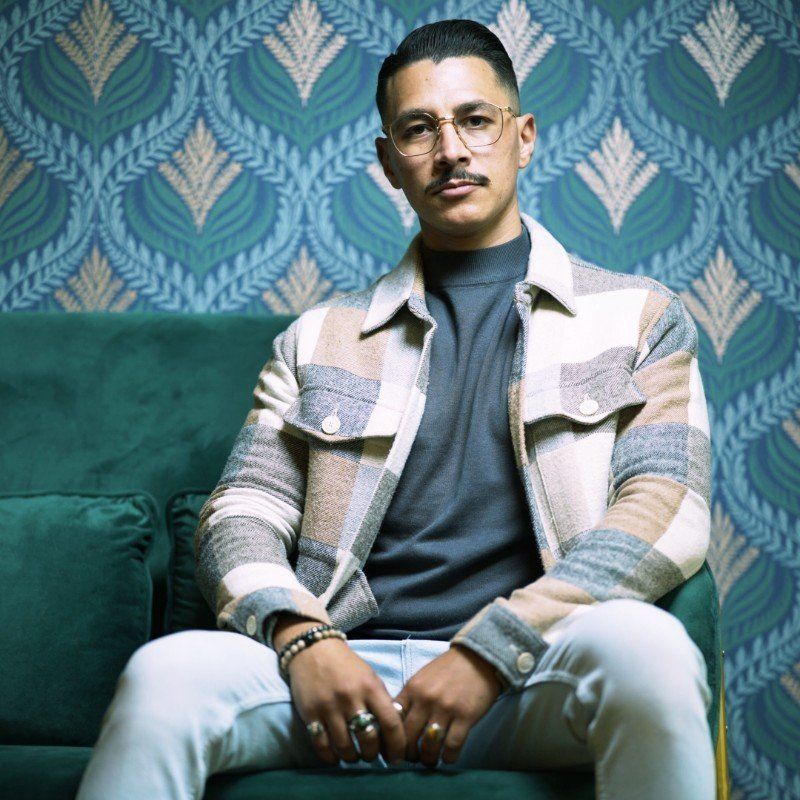

Sincérité architecturale.
Ne jamais simuler ce qu'un bâtiment n'est pas. Une moulure restaurée plutôt qu'une moulure imitée. Un mur porteur respecté plutôt que masqué.
Conséquence : nous refusons environ un tiers des projets qu'on nous propose.

Quinze ans à dessiner des intérieurs parisiens. Une exigence : qu'aucun projet ne ressemble au précédent — et qu'il vous ressemble à vous.
Né au Caire, formé à Paris. Mohamed grandit entre deux villes qui n'ont rien en commun sauf l'obsession du détail architectural. Le souk Khan el-Khalili lui apprend la matière brute ; les passages couverts du 9ᵉ, le silence comme matériau.
Diplôme KEDGE Business School, premier poste en banque privée à Londres. Trois ans à valoriser des actifs qu'il ne touchait jamais. La frustration finit par devenir un projet : revenir à Paris, et faire l'inverse — toucher chaque actif jusqu'à la dernière vis.
En 2019, il fonde Maison Maray rue de Monceau, à deux pas du parc. La maison livre 6 projets la première année, 12 la suivante, et n'a plus jamais accepté de recevoir un client sans avoir d'abord visité ses lieux actuels.
Mohamed parle français, anglais, arabe. Il dort peu. Il dessine en réunion. Et il refuse les projets qui ne lui font pas envie — principe étrange pour une maison, mais qui explique probablement pourquoi tous les clients reviennent.
Ne jamais simuler ce qu'un bâtiment n'est pas. Une moulure restaurée plutôt qu'une moulure imitée. Un mur porteur respecté plutôt que masqué.
Conséquence : nous refusons environ un tiers des projets qu'on nous propose.
Quatre familles maximum par projet. Si une cinquième s'impose, c'est qu'une autre doit partir. La beauté d'un intérieur tient autant à ce qu'il refuse qu'à ce qu'il accepte.
Conséquence : nous photographions chaque livraison sur film 4×5, jamais retouché.
Un projet réussi est celui qu'on ne remarque pas. Pas parce qu'il est neutre, mais parce que tout y est exactement à sa place — au point qu'on n'imagine plus le lieu autrement.
Conséquence : 98 % des clients ne déplacent aucun meuble dans les six mois.

Quatre chasseurs partenaires, exclusivement parisiens, qui connaissent les rues mieux que les gardiens. 80 % de notre flux off-market vient d'eux.

Un seul atelier d'ébénisterie. Un seul maçon. Un seul peintre. Tous à moins de 30 minutes de la maison. Tous travaillent avec nous depuis 2020.

Deux conciergeries partenaires pour la gestion locative haut de gamme et la maintenance continue des biens livrés.
« Maison Maray est l'une des rares maisons parisiennes à savoir conjuguer rigueur d'investisseur et œil de décorateur. »Octobre 2024
« Une grammaire de quatre matières, tenue avec une discipline rare dans l'haussmannien d'aujourd'hui. »Mars 2025
« Mohamed Maray ne décore pas — il révèle. Et la nuance fait tout. »Janvier 2026